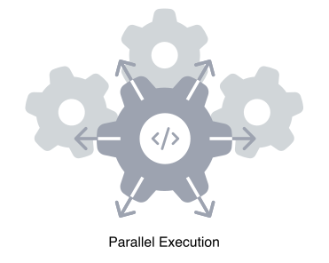

<div class="w-full">
  <div class="px-6 lg:px-10 max-w-7xl m-auto">
    <div class="py-6 px-6 lg:px-10 rounded-xl bg-[#f1fbff] pb-10 mt-6">
      <div>
        <div class="text-2xl lg:text-3xl font-semibold mb-6">
          Automatic parallel execution
        </div>

        <div class="lg:grid grid-cols-10">
          

          <div class="text-gray-500 text-lg pt-8 lg:pt-0 col-span-5 lg:pl-8">
            <p class="pb-2">If your build has multiple steps, Earthly:</p>
            <ul class="ml-8 list-disc">
              <li class="pb-2">Builds a directed acyclic graph (DAG).</li>
              <li class="pb-2">Isolates execution of each step.</li>
              <li class="pb-2">Runs independent steps in parallel.</li>
              <li class="pb-2">Caches results for future use.</li>
            </ul>
          </div>
        </div>
      </div>
    </div>
  </div>
</div>
